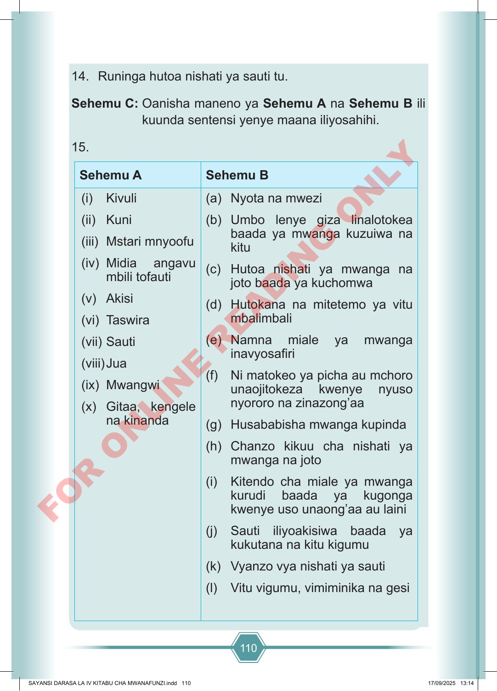

110 14. Runinga hutoa nishati ya sauti tu. Sehemu C: Oanisha maneno ya Sehemu A na Sehemu B ili kuunda sentensi yenye maana iliyosahihi. 15. Sehemu A Sehemu B (i) Kivuli (ii) Kuni (iii) Mstari mnyoofu (iv) Midia angavu mbili tofauti (v) Akisi (vi) Taswira (vii) Sauti (viii) Jua (ix) Mwangwi (x) Gitaa, kengele na kinanda (a) Nyota na mwezi (b) Umbo lenye giza linalotokea baada ya mwanga kuzuiwa na kitu (c) Hutoa nishati ya mwanga na joto baada ya kuchomwa (d) Hutokana na mitetemo ya vitu mbalimbali (e) Namna miale ya mwanga inavyosafiri (f) Ni matokeo ya picha au mchoro unaojitokeza kwenye nyuso nyororo na zinazong’aa (g) Husababisha mwanga kupinda (h) Chanzo kikuu cha nishati ya mwanga na joto (i) Kitendo cha miale ya mwanga kurudi baada ya kugonga kwenye uso unaong’aa au laini (j) Sauti iliyoakisiwa baada ya kukutana na kitu kigumu (k) Vyanzo vya nishati ya sauti (l) Vitu vigumu, vimiminika na gesi SAYANSI DARASA LA IV KITABU CHA MWANAFUNZI.indd 110 SAYANSI DARASA LA IV KITABU CHA MWANAFUNZI.indd 110 17/09/2025 13:14 17/09/2025 13:14 F O R O N L I N E R E A D I N G O N L Y